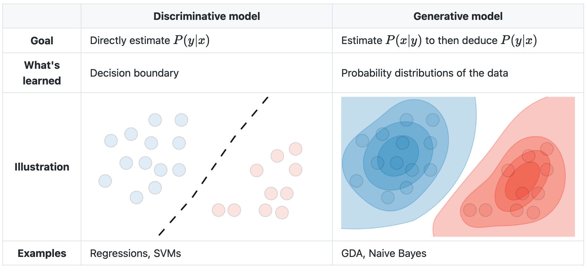

Call:
glm(formula = crim_above_med ~ zn, family = binomial, data = boston)
Deviance Residuals:
Min 1Q Median 3Q Max
-1.4319 -1.4319 0.4634 0.9427 1.8532
Coefficients:
Estimate Std. Error z value Pr(>|z|)
(Intercept) 0.58076 0.10727 5.414 6.17e-08 ***
zn -0.09545 0.01349 -7.075 1.49e-12 ***
---
Signif. codes: 0 '***' 0.001 '**' 0.01 '*' 0.05 '.' 0.1 ' ' 1
(Dispersion parameter for binomial family taken to be 1)
Null deviance: 701.46 on 505 degrees of freedom
Residual deviance: 559.53 on 504 degrees of freedom
AIC: 563.53
Number of Fisher Scoring iterations: 6Bigger Concepts
machine learning
Bigger concepts for MS797 coursework
This page is for concepts that don’t fit into the glossary.
This document is in process.
Classification
The general umbrella categories for classification—where the outcome variable to be predicted is categorical, rather than continuous, like eye color rather than weight—are “discriminative” and “generative”. Discriminative models take sets of data and separate them into classes, like finding the decision boundary between two or more classes, but can’t predict the values of new data. Generative models (used in unsupervised learning) can generate new data, but are more susceptible to outliers (misclassified observations) than discriminative models, require more data to create, and are more computationally expensive.
A generative model—somehow—tries to guess how the data was generated, so it can take a new bit of unseen data, assess the probability that each class would have produced it, and pick the class with the highest probability.
A discriminative model can only look at existing data and create a decision boundary separating the existing data into classes.

Note that there is no decision boundary in the generative model, just levels of probability into which new data could be classified with varying levels of confidence.
Logistic regression is discriminative. Linear discriminant analysis, quadratic discriminant analysis, and naive Bayes are generative, K-nearest neighbors appears to be neither.
Logistic Regression
Logistic regression’s output is a probability that a response variable belongs to a particular category.
The general form of a logistic model is:
\[p(X) = \text{PR}(Y = 1|X)\] The right side of the equation reads “The probability that Y equals 1, given X” - or the chance that Y is a particular category for a specific value of X.
A linear regression model would use this form:
\[p(X) = \beta_0 + \beta_1X\]
And the magic formula for this is the logistic function, in which we raise \(e\) to this power.
\[p(X) = \frac{e^{\beta_0 + \beta_1X}}{1 + e^{\beta_0 + \beta_1X}}\]
(Why \(e^{\beta_0 + \beta_1X}\) instead of, say, \(2^{\beta_0 + \beta_1X}\) or \(\pi^{\beta_0 + \beta_1X}\) or \(123456^{\beta_0 + \beta_1X}\)?)
Dividing both sides by \(1 - p(X)\) (somehow) yields:
\[\frac{p(X)}{1 - p(X)} = e^{\beta_0 + \beta_1X}\]
which is also the odds that Y is 1 given X. If the probability of something is 20%, or 1/5, then the odds are 1/4:
\[\frac{1}{5} \div \left[ 1 - \frac{1}{5} \right] = \frac{1}{5} \div \frac{4}{5} = \frac{1}{5} \times \frac{5}{4} = 1/4 = 0.25\]
When to use logistic regression
When the response variable is categorical, and has two possible classes, like “Yes” or “No”, “Up” or “Down”, etc. However, see Linear Discriminant Analysis below for examples of when not to use it.
In some cases, a categorical response variable could be analyzed with a linear regression by treating the categorical variable as numeric, like treating “not infected” as 0 and “infected” as 1, and using the rounded value as the predictor; however, beyond 2 possible responses it’s unlikely that a continuous scale could be established between the possible values, and it gets messy.
How to do logistic regression
Use glm() with the argument family = binomial to indicate logistic regression.
Using the Boston data set from the ISLR2 package, the following will model the probability of a tract having a crim rate above the median, based on zn, using logistic regression:
The zn.fit summary above will show the coefficients and p-values; the $coef aspect of the summary will show more detail.
predict() can then be fed the fit to make predictions. The argument type = "response" will tell it to output probabilities “of the form \(P(Y = 1|X)\)” from the data that was used in the fit, also described as the training data. It returns a vector of probabilities for every data element.
| 1 | 2 | 3 | 4 | 5 | 6 |
|---|---|---|---|---|---|
| 0.2428 | 0.6412 | 0.6412 | 0.6412 | 0.6412 | 0.6412 |
The responses can be converted into categories and turned into a confusion matrix to show how the regression did with the training data.
| No | Yes | |
|---|---|---|
| No | 119 | 15 |
| Yes | 134 | 238 |
The overall success rate can be calculated with mean(), comparing each predicted value to the actual value:
[1] 0.7055336The model can then be run on test data that is held out from the main set, with the expectation that it won’t do quite as well as the training data. The efficacy can then be assessed in the same way, and if it’s not high, we can return to the model and try to find other forms that make better predictions - or perhaps conclude that we can’t make a good prediction at all.
Linear Discriminant Analysis (LDA)
The simplest use case for LDA is when there are more than two possible response classes; logistic regression gives the probability that an observation is in a class A or B, but it can only handle two classes.
LDA also gives better results when “there is substantial separation between the two classes”, or where the sample size is small and the distribution of the predictors is approximately normal in each of the classes.
Resampling methods
Resampling methods are used to refine and test models against training data by repeatedly testing against different subsets within the data.
Cross-validation can be used to estimate the test error rate of a method (model assessment), and bootstrap is mostly to measure the accuracy of a parameter or of a method.
Cross-validation: validation set approach
This approach randomly splits the data into two sets: a training set and a validation or test set. Size ratios seem to be on the order of between 50-50 to 3:1 or 4:1 training-to-test data. The model is fit against the training data, and then predict() is used to predict the results for the validation data; the results of predict can then be compared against the actual classifications in the validation data to compute the error rate.
This process can be run repeatedly with different splits.
The general process is:
- Randomly split the dataset into training and validation sets
- Fit the model to the training data
- Predict the outcomes of the model on the validation data
- Convert the predictions into categorical variables that match the field being predicted (like Yes/No, etc)
- The error rate is the proportion of correct predictions in the validation data.
The code below runs 10 iterations and accumulates the results into a results data frame.
Cross-validation: leave-one-out (LOOCV)
This method is similar to the validation set approach, except that the validation set is only one element, and the training set is the remaining \(n-1\) observations. It is run automatically \(n\) times and returns an average of the test errors.
The process is simpler than the validation set approach:
- Fit the model to the entire data set with
glm()(omitting thesubsetargument) - Run
cv.glmon the fit - The
deltafactor of the return data is the cross-validation error rate for the test data.
Code from the book:
Cross-validation: k-fold
K-fold cross-validation is like leave-one-out cross-validation but with a larger test set; it splits the data up into \(k\) segments and runs the cross-validation on each. It may give better results if run repeatedly and averaged, as with the validation set approach. It is faster than LOOCV, obviously, because it uses less data.
The process is the same as LOOCV, except a parameter such as K = 10 is added to the cv.glm() call. 5 to 10 is a common range for values of \(k\).